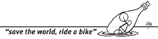

BİTİRİRKEN
2005 senesinde Denizli-Muğla-Antalya seyahati ile başladı seyyahlığımız.
2006’da rotamız Karadeniz kıyılarına döndü.
2007 yılı yolculuğumuzu elinizdeki kitapta okudunuz.
2008 yılında Almanya’dan Hollanda, Belçika ve Fransa’ya uzandı yolumuz.
2009 oğlumuz Tibet Çınar doğdu.
2011’de Tibet Çınar henüz 22 aylıkken, orta Avrupa’da, Almanya, Fransa, İsviçre, Avusturya, Slovakya, Macaristan, Çek Cumhuriyeti turu yaptık. 3486 km.
2012 Hollanda’dan Türkiye’ye ailece bisikletlerimizle geldik. 10 ülkenin topraklarında sürdük. 3660 km. Bu hikayeler de sizlere anlatılacak.
Siz bu kitabı okurken, biz ailece Kuzey Kutup Dairesi’ne doğru pedal basıyor olacağız. Gidilecek, sürülecek çok yol, görülecek çok yer, yaşanacak çok macera var.
Bisikletle dünya turumuzu güncel takip etmek için:
